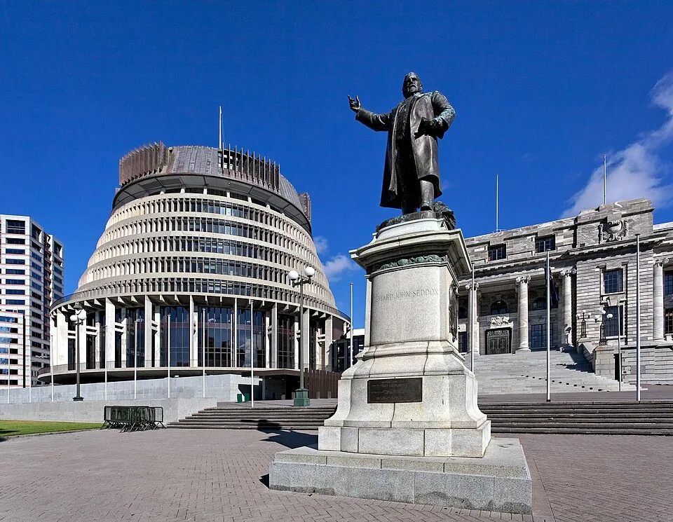

北京九点开工，在惠灵顿是下午两点
2026年11—12月在新西兰夏令时内。如果需要和北京同事整班同步，北京09:00–18:00对应惠灵顿14:00–23:00；北京中午12点的休息时间，落在当地17点。上午可以留给采购、洗衣或出门，晚上的通话条件则要放进选房要求。
惠灵顿市中心可以从两条街道安排：Willis街一线有本文核到的周租Studio和two/fiftyseven工位；Lambton Quay有Urban Hub。先选你需要的房间和实际工位地址，再看晚间回程，别只按同在市中心估算。
本页写给中国大陆普通护照、为境外雇主或客户工作的人。30晚是住房预算单位，准许停留按个人签证与入境记录确认。全国手续另见新西兰访客远程工作说明。
4700至9500纽币，房费之外留好网络与晚间出行
三档按同一种住法比较：一个人承担整间房，住30晚，默认在房间工作。住房和五项生活费都是编辑预留；往返国际及城际交通、签证、保险和可退押金另备，尚无对应全部日期的含费住房订单。
以舒适档6900纽币为例，住房预留4500，余下2400安排餐饮、交通、通信与房间补差，再留洗衣日用品和休闲余量。拿到完整日期房费后，把已包含的电费和网络从其他项目里核掉，避免把同一项付两遍。
如果每30晚去4次two/fiftyseven，工作日日票40纽币另加15%消费税，含税每次46，工位预留再加184纽币。它在18点结束的时段只能覆盖北京同步班次的前半段。需要晚间继续工作的，可比较659纽币另加税的Dedicated月费，含税757.85；合同起算、能否只买一个月和退订条件仍须确认。
住房押金也会占用到达时的资金。Capital Accommodation按500纽币周租档收四周押金，按公开价算是2000纽币，未计入消费预算；其他房源不能直接套这笔押金。
- 单人住30晚的支出计划，住房与日常费用为预留；具体房费、税费及库存另确认。
- 总额包含所列预留和参考票价；未确认的税费与超量费用、机票、签证、保险及押金另计。
各项换算后都取整，总额则先加原币、再统一换算，因此逐项相加可能有一点差额。
| 项目 | 原币（NZD） | 显示币种（CNY） | 依据与条件 |
|---|---|---|---|
| 住房预留 | 4,500 新西兰元 | 17,046 元 | Capital Accommodation Room Types and Rates计价条件一人承担整间房30晚的编辑预留；500纽币周价只作住法参照，未确认本次30晚房费。 30晚按一笔月价参照或住房预留规划，最终日期和含费范围仍须确认。 |
| 额外共享办公票 | 0 新西兰元 | 0 元 | 预算预留计价条件不另购工位；房内网络和夜间通话仍需确认。 |
| 餐饮预留 | 1,200 新西兰元 | 4,545 元 | 预算预留计价条件编辑的单人餐饮额度，非商家菜单合计。 按所选30晚调整，不代表实际消费。 |
| 本地交通预留 | 300 新西兰元 | 1,136 元 | Tickets & fares Bus passes计价条件187纽币通票仅一种公交参照；按实际路线选择，不等于已含机场快线。 按所选30晚调整，不代表实际消费。 |
| 通信与房间补差 | 200 新西兰元 | 758 元 | Capital Accommodation Room Types and Rates Capital Accommodation Facilities计价条件无线网、手机及房间补差预留；最终房费已含的电和热水不要重复计费。 按所选30晚调整，不代表实际消费。 |
| 洗衣与日用品 | 150 新西兰元 | 568 元 | Capital Accommodation Facilities计价条件公共洗衣4纽币/次只作参照，烘干和洗涤剂未确认；其余为日用品额度。 按所选30晚调整，不代表实际消费。 |
| 休闲与机动 | 550 新西兰元 | 2,083 元 | 预算预留计价条件编辑周末与临时生活支出额度，不含押金、保险或机票。 按所选30晚调整，不代表实际消费。 |
| 总计 | 6,900 新西兰元 | 26,137 元 | 按原币总额统一换算 |
500纽币周租有小厨房，网络和整月账期另看
Capital Accommodation：25平方米独立Studio
Capital Accommodation在363 Willis Street。公开的1–3个月合同为一人500纽币/周，最低一个月，房间25平方米，有独立卫浴和小厨房，含电与热水。这里是整间Studio由一个人承担房费，不能用390纽币的4–6个月档或355纽币的7–12个月档替代。
房内设备列有微波炉和冰箱，也有吐司机与电水壶；每层另设公共厨房。想每天用私人灶台做饭，就问清分给你的房间设备。短住档只明确了入住时铺好的床品和毛巾，定期房间清洁没有随房价写清。
网络与洗衣设施页把无线网络另行收费：80GB/月为80纽币，另有更小流量包。每层公共洗衣区每次洗衣4纽币。视频会议和上传文件较多的人，要问网络速率、房内覆盖及续购规则；80GB不等于不限量，这里也没有本站测速。
500纽币是周价，最低租期写的是“一个月”。请让运营方用实际入住和退房日期确认30晚总价、尾周如何计费，以及税费、预付租金和退押金条件。四周押金之外，网页没有给出这些完整条款，11—12月是否有房也要按日期确认。
需要完整房内厨房，可以换一种公寓询价
Terrace Villas提供带完整厨房和洗衣设施的自助公寓，并列有不限量Wi-Fi及每周服务。两周以上可以按日期询定制长住包价，联系地址为202 The Terrace；具体分配公寓地址仍要写进报价。这里没有已确认的30晚房费，不能把网页示意夜价乘30。
看到更长租期的周价，也要把合同一起看。Pinnacle Apartments最低住三个月，749纽币/周对应6–12个月合同，不能拿来订这一次30晚。
18点以后还要开会，月票要选对门禁
把完整北京班次放在惠灵顿，会有五个小时落在18点以后。日票可以让你在下午换个环境工作，晚上的安排则需要回房或购买适用的全天会员。
| 地点和票型 | 公开原价与税 | 使用时间 |
|---|---|---|
| two/fiftyseven 工作日日票 | 40纽币另加15%消费税，含税46 | 工作日08:00–18:00 |
| two/fiftyseven Flexi 5天/周 | 509纽币/月另加税，含税585.35 | 工作日08:00–18:00 |
| two/fiftyseven Dedicated | 659纽币/月另加税，含税757.85 | 24/7；月费最低承诺和退订待确认 |
| Urban Hub Hot Desk | 45纽币/日起，含税情况未说明 | 08:30–17:30，最短1日 |
| Urban Hub Dedicated | 700纽币/月起，含税情况未说明 | 24/7，最短1个月 |
two/fiftyseven在57 Willis Street及70 Victoria Street的2层。会员页包含会议室点数，但没有列出各档的具体数量和晚间预约规则。问价时把14点至23点的工作时段写明，再确认长会能用哪个位置，别把24小时门禁当成通话空间已经安排妥当。
Urban Hub在318 Lambton Quay的2层。价目页顶部另有450纽币/月起的总述，但没有对应清楚具体票型；本文采用对照表里的Dedicated 700纽币/月起。税费、押金和节日出入条件要随这张票确认，不能用一张白天热桌票推定晚间也可进。
咖啡安排在上午，Willis街门店周末不开
需要14点才开始完整工作班次，上午可以买咖啡、采购或出门。Raglan Roast的门店表里，156 Willis Street分店周一至五07:00–16:00，周末休息；40 Abel Smith Street分店平日06:00–17:00，周末08:00–17:00。
这两处可以按自己的住处安排上午停留，周末则别照搬Willis街店的工作日习惯。现有信息只确认地址和营业时间，长坐、插座和Wi-Fi没有确定条件，晚间会议另在房间或适用工位安排。
0家符合条件
没有符合这组条件的地点，换一个筛选试试。


把Willis街住处与Lambton Quay工位分别定位
Capital Accommodation在363 Willis Street；two/fiftyseven列57 Willis Street和70 Victoria Street两个入口地址，均为2层；Urban Hub在318 Lambton Quay的2层。Terrace Villas的202 The Terrace是联系地址，确认订房时还要拿到实际入住公寓的位置。
这些地址用于查自己的路线，没有本站核实过的步行分钟数。若你选择晚间留在工位，把退场时间和回房路线一起查；地址接近，也不代表夜间一定有适合的公交班次。
Wellington的30天公交票为187纽币，使用Snapper，适用1–3区的符合条件公交。它从首次使用起连续30天，Snapper说明进一步写明首次完成适用行程的下车刷卡时激活。机场快线和轮渡不含，指定午夜后N线路也不含，仍须正常上下车刷卡。30晚的到离店日期分别安排，不把通票当成自然月所有交通都已付清。
地点名单可直接使用；底图需要网络。
| 地点 | 原页地址 | 用途 |
|---|---|---|
| Capital Accommodation | 363 Willis Street, Wellington, New Zealand | 住宿参照 |
| two/fiftyseven | Level 2, 57 Willis Street + 70 Victoria Street, Wellington | 办公参照 |
| Urban Hub | Level 2, 318 Lambton Quay, Wellington CBD | 办公参照 |
| Raglan Roast — Willis Street | 156 Willis Street, Te Aro, Wellington 6011 | 位置参照 |
| Raglan Roast — Abel Smith Street | 40 Abel Smith Street, Te Aro, Wellington 6011 | 位置参照 |
| Terrace Villas — contact address | 202 The Terrace, Wellington Central 6011 | 联系处，实际入住位置另确认 |
| Harbourside Market | Corner Barnett and Cable Street, Te Aro, Wellington | 位置参照 |
大陆出发的签证和境外远程工作条件各自核对
中国大陆普通护照不在新西兰一般免签名单里，从大陆出发通常先申请适用的Visitor Visa。移民局当前说明允许2025年1月27日及之后申请的访问签证持有人，为新西兰境外的雇主或客户远程工作；新西兰本地雇佣、交换商品服务的活动，或必须在当地现场完成的工作，有不同要求。
如果已经入境澳洲、持符合条件的有效澳签并从澳洲机场直飞，可另核NZeTA路径。官方2026年10月更新写明这项安排继续有效，直到另行通知；仅在澳洲转机或从其他国家飞来不能套用。NZeTA也不等于获准入境的保证。
完整条件集中在新西兰访客远程工作专题。这篇只按30晚算住法，签证截止日不随租房合同延长；Visitor Visa页面也建议获批前不要预订不可退的行程。
11月仍是春季，12月还要看节日营业安排
新西兰官方旅游资料把9—11月划为春季，12—2月划为夏季。春季惠灵顿温度概述为最低8—10℃、最高16—18℃，这是整季范围，不能当作11月月均或2026年逐日预报。
NIWA的惠灵顿气候概述指出，区域天气受库克海峡和崎岖地形影响，时空差异较强，整体较多风。出门前看实际天气，外层防风防雨，房间则问清供暖和夜间通话条件；12月进入夏季也不保证每天暖和无风。
如果入住范围跨圣诞，单独问工位和住处的节日安排。2026年12月25日是周五圣诞节，Boxing Day为12月26日，部分工作安排的观察日是28日周一。公共假日表不能代替门店自己的开放日历。
Mike住了一个多月，日常变成买菜和徒步
在2024年1月25日的生活记录里，Mike（博客署名The Friendly Astronaut）说自己在惠灵顿已经住了一个多月。他从到处旅行转向日常采购食物、游泳与徒步，只偶尔去咖啡馆，平时选择冻干咖啡。
这段经历有用的地方是生活安排：住下来以后，采购和每天怎样吃饭也会占用时间。它没有公开具体房型、入住人数或房费，所以这里没有把它补成一份单人30晚账单。原文还提到寻找当地临时工作，那也不能直接套给这次为境外雇主工作的访问者。
和奥克兰比较，时差相同，住法还要逐项对齐
目标11—12月，奥克兰与惠灵顿都在同一夏令时内，与北京同步都会落在当地下午至夜间。可以先确认你是否接受这样的工作时段，再比较两个城市的具体房源。
惠灵顿这里有500纽币周租、最低一个月的小厨房Studio作询价线索；不要拿它去对比另一城合租单间、年约或没有水电的长租。两边都用一个人承担整间房、30晚和同一种工位安排，房费取得完整日期总额后再看差别。全国资格可直接沿同一份新西兰说明核对。
问价时写完整日期，再问尾周、网络和晚间出入
给住处的询价应同时写入住和退房日期、实际晚数与一人整间房。Capital要问清最低“一个月”怎样定义、最后不足一周怎样收费，四周押金之外是否还要预付租金。需要做饭时，请对方说明分配房间的灶具；需要上传或长会时，让网络流量和续购规则进入报价。
工位则写清当地14点至23点的使用时段，问单月是否可买、月费如何起算，以及晚间会议室和节日期间怎样进出。拿到完整住房总额后，再替换预算工具里的房费；公共月价标签不能替代这次日期的确认账单。
周租、流量和票种，订之前容易混的几件事
500纽币周租，能按四周就订满30晚吗？
四周是28晚，和30晚不同。Capital另有最低一个月要求，月期定义与尾周费用都要按完整日期确认；本文3000纽币的省钱档住房金额是预留。
房间有Wi-Fi，是否代表可以不限量开会？
Capital公开网络按流量另付，80GB/月80纽币。实际覆盖、速率和续购规则须确认；这份信息不能证明视频会议一定稳定或流量一定够用。
Flexi月会员能用到23点吗？
two/fiftyseven的Flexi只列工作日08点至18点，Dedicated才列24/7。Urban Hub的Hot Desk到17:30，Dedicated最短一个月并列24/7；还要确认具体通话位置。
187纽币公交票包括机场快线吗？
不包括。Wellington30天公交票只适用符合条件的1—3区公交，机场快线、轮渡和指定午夜后线路另算，卡内还要保留正余额并正常上下车刷卡。
有澳洲签证，就能从大陆拿NZeTA来吗？
不能这样外推。专门路径要求符合条件的澳签、已经入境澳洲、从澳洲机场直飞及有效NZeTA；只转机或从其他国家出发不适用。
价格出处与图片署名
作者：Roamorrow 编辑部。本文链接不收取返佣。预算预留、公开价格与具名经历在对应段落说明；房型和含费范围按自己的日期确认。
价格与资料出处
- Capital Accommodation Room Types and Rates · 2026-10-27
本轮价目页没有优惠有效截止日，不能据此保证2026年11–12月可订同价。
- Capital Accommodation Facilities · 2026-10-27
未读到无限量套餐、续购/超额规则、下载上传速率或晚间实测。
- two/fiftyseven workspace memberships · 2026-10-27
最低合同承诺、月费起算、取消/续费、押金、电话间及节日门禁未列清楚；659是公开月费，不是指定30晚最终合同价。
- Dedicated & Hot Desks in Wellington · 2026-10-27
页首另有450/月起但未对应清楚具体套餐；本轮不以450替换Dedicated700。
- What GST is · 2026-10-27
只给明确写不含GST的工位计算15%；不自动给未说明的房租再加15%。
- Tickets & fares · 2026-10-27
不从1–3区铁路30天票140.10替代公交187；两者不能混。
- Bus passes · 2026-10-27
日票/其他公交与铁路票的范围不同，不推成全地区轨道公交机场全包。
- Daylight saving in NZ · 2026-10-27
只对应目标月份，不能套全年同一时差；计算没有证明工位晚间一定可进。
- Working remotely in New Zealand on a visitor visa · 2026-10-27
远程工作允许条件不延长获准停留，不保证个人入境或获签；税务另有判断。
- Visitor Visa · 2026-10-27
不把页面最长6/9月、NZD441起或处理时间当个人获批结果。
- Visa waiver countries and territories · 2026-10-27
从澳洲出发的符合条件中国护照另有专门路径，不将一般列表结论外推到该例外。
- Chinese and Pacific Island visitors travelling from Australia · 2026-10-27
不能沿用旧试点文件把2026-11-03写成固定到期日；也不是中国护照普遍免签。
- Wellington regional climatology · 2026-10-27
页面概述关联Chappell2014历史气候报告，不是2026逐日预报。
- Discover spring in New Zealand · 2026-10-27
此为整季概述且未标气候样本期，不能当11月月均或2026年预测。
- Seasons in New Zealand · 2026-10-27
季节划分不保证具体惠灵顿日期温暖、晴天或无风。
- Public holidays and anniversary dates · 2026-10-27
不据公假表推定每个工位、餐馆或住处如何营业，须看各自节日安排。
- Raglan Roast — Our Cafes · 2026-10-27
地址与营业时间不证明可以长坐、插座或Wi-Fi；不当作晚间工位。
- New Zealand, New Mike: Living in Wellington one month in… · 2026-10-27
原文日期2024-01-25。 房型、入住人数、确切日期与房租金额未给，没有完整账单、网速或30晚独住付款证据。
- About — To the Moon · 2026-10-27
不以域名推断或披露其他身份资料。
- Serviced Apartments Wellington — Terrace Villas · 2026-10-27
没有本轮11–12月30晚房费及押金/取消确认，不能把夜价乘30或用它证明某一预算档可订。
- Terms & Conditions — Terrace Villas · 2026-10-27
原文日期2026-08-07。 网站Terms不能冒充订房合同细则。
- Harbourside Market · 2026-10-27
主办方官网403，本轮不声明精确收摊时刻或保证恶劣天气照常开；不凭它下全城最便宜结论。
- Fully Furnished Long Stay Apartments · 2026-10-27
只作租期辨别反例，不计为本篇30晚住房报价或预算依据。
- ECB欧元参考汇率 · 2026-10-26
欧洲央行2026年10月26日参考值，仅用于规划换算；银行和支付费用另计。
周日上午去市场，活动留在自己的工作时段之外
Harbourside Market在Barnett与Cable街角，Te Papa旁。WellingtonNZ把它介绍为周日上午的蔬果与食品采购点，可以放进这一月的周末安排。市场是否因天气调整，要看当天主办方信息；这里没有用它证明菜价更低。
two/fiftyseven的会员页也包含社区活动。若希望在工位之外认识人，可以在买票时一起看当月安排；与北京同步到23点的人，未必能参加当地傍晚的全部活动，选一项自己能长期参加的就够了。